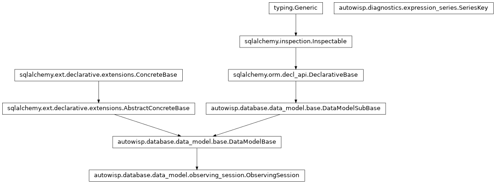

autowisp.browser_interface.diagnostics.series_table module
Class Inheritance Diagram

What the table above a diagnostics plot offers, and what it binds.
The half of the plot page that knows what a row means: which observing
session and image type a row may be drawn for, which channel each of its
columns may be bound to, how many images a binding would draw, and what a
row is called while the user chooses. It never evaluates an expression and
never draws anything – image_diagnostics_views does both – which
is not merely a tidy division. The dropdowns a row is built from span every
observing session and image type in the project, so evaluating anything to
fill them would be work proportional to the whole image collection; every
question asked here is answered by a SQL aggregate instead.
- autowisp.browser_interface.diagnostics.series_table.count_bound_images(slot_needs, channels, db_session)[source]
Count the images one binding draws on, for every group at once.
The exact question, where
get_slot_options()answers the looser one that fills the dropdowns: an image counts when its rows cover every (diagnostic, channel) pair between them, which is what a quantity comparing channels needs and what reading each channel on its own cannot say.Every group is counted in one aggregate rather than one per row, since a binding is usually shared – by every row of a monochrome project at render, and by nothing much afterwards, when one row is rebound at a time.
- autowisp.browser_interface.diagnostics.series_table.get_available_series(x_quantity, y_quantity, expressions, db_session, *, marker)[source]
Return what one section’s table offers, and the row it starts with.
A row is a series the user builds, so what this answers is what its dropdowns may offer: the (session, image type) pairs where every channel column has a channel to bind. The table then starts with one row on the first of them – the earliest session – so that the page has a series without the user having to build one.
The count is the number of images recording every diagnostic both axes need – for an expression, every diagnostic it reaches transitively. It is an upper bound on the number of drawn points, since arithmetic can still yield NaN, so the column is labelled for the inputs rather than for the points. Nothing is evaluated to produce it: the count is a question about rows, and stays a SQL aggregate.
- Parameters:
x_quantity (str) – Quantity on the X axis.
y_quantity (str) – Quantity on the Y axis, which is what the rows draw and therefore what their ids name.
expressions (dict) – The library,
{name: expression}, passed in rather than fetched so that nothing below the view has to know it came from the browser-interface database.db_session – An active SQLAlchemy database session.
marker (str) – What this section’s rows are drawn with to begin with, chosen for the section rather than for the row so that the quantities on a plot are told apart by shape.
- Returns:
diagnostics_fields,pair_optionsanddiagnostics_list, in the format_series_section.htmlexpects.
- Return type:
- Raises:
PipelineError – If an axis names nothing that resolves.
- autowisp.browser_interface.diagnostics.series_table.get_axes_slot_needs(x_quantity, y_quantity, expressions)[source]
Return what each channel column of the table reads, in column order.
The x quantity’s slots followed by the y quantity’s, concatenated rather than merged: an expression’s numbers are formal parameters, so the two axes’ slots are unrelated even when written alike.
- autowisp.browser_interface.diagnostics.series_table.get_axis_slots(quantity, expressions)[source]
Return the diagnostics read in each channel one axis binds.
An axis binds one channel per parameter of the quantity it draws, and two axes never share one: their numbers are formal parameters, so the first slot of the x quantity and the first of the y quantity are unrelated, and tying them together would silently couple the axes.
- Parameters:
- Returns:
- One
(parameter, needed)pair per channel to bind, in column order: the slot number the definition writes, which names the column, and the diagnostics read in it. The parameter is
Nonefor a diagnostic, which has no numbering of its own. Empty for an axis over the time alone, which binds nothing.
- One
- Return type:
- autowisp.browser_interface.diagnostics.series_table.get_pair_options(slot_needs, options, labels, db_session)[source]
Return the (session, image type) pairs a row may be drawn for.
A pair is offered where every channel column has at least one channel to bind: unless each of them can be read somewhere in that session’s frames of that type, a row on it could name no data at all. Which channel a column takes is chosen in the row afterwards, so a pair is offered once rather than once per binding it could carry.
- Parameters:
slot_needs (list) – What each channel column reads, in column order.
options (dict) – What
get_slot_options()returned.labels (dict) – The session labels from the same call.
db_session – An active SQLAlchemy database session.
- Returns:
{"value", "text", "start", "end"}per pair, by sessionstart time and then image type – which is the order the dropdown lists them in, and why the first of them is the earliest session. Empty where the axes bind no channel at all, there being nothing to draw and so nothing to offer.
- Return type:
- autowisp.browser_interface.diagnostics.series_table.get_row_options(y_quantity, *, x_quantity, expressions, db_session)[source]
Return what a row drawing one quantity against the page’s x is built from.
The three things that have to be worked out before any row can be built: what each channel column reads, what each may be bound to, and the (session, image type) pairs the row may name.
- Parameters:
- Returns:
(slot_needs, options, pair_options), asget_axes_slot_needs(),get_slot_options()andget_pair_options()return them.
- Return type:
- autowisp.browser_interface.diagnostics.series_table.get_series_key(series)[source]
Return the population one posted row draws from, and what it binds.
All of it comes from the client and none from the row id: the session, the image type and the channels are chosen in the row, so reading any of them from anywhere but the dropdown the user just changed would be reading a stale value. What the id carries instead is the quantity, which the row cannot change.
- autowisp.browser_interface.diagnostics.series_table.get_session_times(session_ids, db_session)[source]
Return when each observing session began and ended, as text.
Formatted here rather than in the template because the table sorts a column by the text in it:
YYYY-MM-DD HH:MMUTC sorts into chronological order, which is the whole reason these two columns exist. Session labels are free-form, so nothing else on the row can be sorted on to the same effect.- Parameters:
session_ids (iterable) – The sessions to look up, read in one query however many of them there are.
db_session – An active SQLAlchemy database session.
- Returns:
{session_id: (start, end)}, with an empty stringwherever a session records no such time.
- Return type:
- autowisp.browser_interface.diagnostics.series_table.get_slot_headings(axis, axis_name, slots)[source]
Return the column heading for each channel one axis binds.
Named for the axis as well as the quantity because the two axes may name one quantity – comparing a diagnostic between channels is exactly that – and two columns headed alike would say nothing. Where an axis binds several channels the heading is the reference as the definition writes it, so a column can be matched to the text it fills in.
- Parameters:
axis (str) – Which axis these columns belong to.
axis_name (str) – The quantity as the selector names it, which for the quantile family is the family rather than a member: the table has one header for all of them.
slots (list) – What
get_axis_slots()returned for the axis.
- Returns:
One heading per channel to bind.
- Return type:
- autowisp.browser_interface.diagnostics.series_table.get_slot_options(slot_needs, db_session)[source]
Return what each slot of the table may be bound to, and the labels.
One aggregate per distinct set of diagnostics among the slots – usually one for the whole table, since the commonest axis pairs read the same diagnostics in every slot. Nothing is evaluated: which channels a slot may offer is a question about rows.
- Parameters:
slot_needs (list) – What each slot reads, from
get_axis_slots()for each axis in turn.db_session – An active SQLAlchemy database session.
- Returns:
- dict: One entry per distinct set of needs, holding
{(session_id, image_type): {channel: count}}.
dict:
{session_id: label}, the same whatever is read.- Return type:
- autowisp.browser_interface.diagnostics.series_table.get_table_response(post_data, *, x_quantity, expressions, db_session)[source]
Return the rows to draw, and what the edit behind this redraw earns.
Three kinds of redraw arrive here. A row was rebound (
bind) – its last channel chosen, or another (session, image type) pair, which is a rebinding as much as the first since which channels a column may offer depends on the pair, and so is answered even while the channels are unset. Or+was pressed in a row (add), which earns a copy of it. Or nothing structural happened at all – a colour, a marker, a row switched off – which earns the figure and nothing else.Every one of them rides on the redraw the edit causes anyway, so each costs one round trip rather than two, and the table and the figure are answered together. Nothing here re-renders the table: the client replaces a row’s channel cells, or inserts one row, which is what lets every other row keep its node, and with it what was typed into it and its place under whatever sort is in force.
- Parameters:
post_data (dict) – The whole POST, holding every row’s state and, where an edit is being answered,
bindoradd: the id of the row it happened in.x_quantity (str) – Quantity on the X axis. The y comes from the row id, each row naming the quantity it draws.
expressions (dict) – The library,
{name: expression}.db_session – An active SQLAlchemy database session.
- Returns:
- list: The rows the figure is drawn from: those posted, plus
an added row, and with a rebound row’s colour and label replaced by the defaults of its new binding wherever the client reports them still automatic. Drawing from these is what stops a rebound row appearing in the colour and legend of the binding it has just left while the table beside it shows the new ones.
- dict: For a rebinding,
bindechoed back with the row’s count, its channel cells rendered for the pair it now names, that session’sstartandend, and the colour and label its binding makes default. For an addition,added_row, the markup to insert, andafter, the row to insert it below. Empty when nothing was edited, which is every other redraw.
- Return type:
- autowisp.browser_interface.diagnostics.series_table.make_id(*parts)[source]
Return one of the ids the client round-trips, built from parts.
One function for both of them – a row’s
quantity|ordinaland a pair’ssession id|image type– because the encoding is the same and all either needs of it is that it can be taken apart again. Where the two differ is in the reading:split_row_id()andsplit_pair_id().- Returns:
- The opaque id, which has to survive a round trip through
the client unchanged.
- Return type:
- Raises:
ValueError – If a part contains the separator, which would make the id ambiguous. Worth failing on rather than trusting, since the alternative is a plot that silently draws the wrong rows.
- autowisp.browser_interface.diagnostics.series_table.make_row_for_pair(row_id, series_key, *, slot_needs, options, pair_options, marker, db_session)[source]
Return one row of the series table, bound as far as its pair allows.
Shared by the first row of a table and by a row whose pair has just changed, both asking the same question: what a row on this pair offers, which of the channels it names survive there, and how many images the result draws.
- Parameters:
series_key (SeriesKey) – The pair the row names, and the channels it would keep – those the pair does not offer are dropped.
slot_needs (list) – What each channel column reads.
options (dict) – What
get_slot_options()returned.pair_options (list) – What
get_pair_options()returned.marker (str) – The marker the row’s section starts its rows with.
db_session – An active SQLAlchemy database session.
- Returns:
- A series entry, as
make_series()builds it, counted where the pair leaves it fully bound and uncounted where it does not.
- A series entry, as
- Return type:
- autowisp.browser_interface.diagnostics.series_table.make_series(row_id, series_key, options, slots, count, *, marker)[source]
Build the entry describing one row of the series table.
- Parameters:
series_key (SeriesKey) – What the row draws once bound. Its
channelsare empty for a row still to be bound.options (list) – Every (session, image type) pair to allow the user to select, as
get_pair_options()returns them. Carried by the row rather than read from the page’s context, so that a row can be rendered on its own.slots (list) – One cell per channel the axes bind, as
make_slot_cells()builds them.count (int) – The number of images contributing, or
Nonewhere nothing is bound yet and there is nothing to count.marker (str) – What the row is drawn with to begin with, which its section decides: the default tells quantities apart by shape, as the colour tells channels apart. Editable afterwards, like the colour.
- Returns:
- A series entry with the keys expected by
diagnostics/_series_row.htmlandplot_image_diagnostic_series().
- Return type:
- autowisp.browser_interface.diagnostics.series_table.make_slot_cells(available, channels)[source]
Return what each channel column of one row offers, and what it says.
A column offering a single channel is settled rather than asked about: that is the whole of a monochrome camera, and of a colour one whose other channels are not processed yet, and demanding a click with one possible outcome before anything can be drawn is ceremony. Such a cell shows its channel as text, which is what lets a row be drawn the moment it appears. Should another channel be recorded later, the column has a choice to offer and asks for one.
What a column may offer depends on the (session, image type) pair the row names, so choosing another pair asks this again for all of them. A channel the new pair still offers is kept – the user chose it, and it remains an answer – and one it does not is cleared rather than quietly bound to something else.
Pure, so that both rules can be tested without a database or a browser.
- Parameters:
- Returns:
One cell per column, as
_slot_cells.htmlrenders it.- Return type:
- autowisp.browser_interface.diagnostics.series_table.next_row_id(row, row_ids)[source]
Return the id for a row added beside row, drawing the same quantity.
One past the highest ordinal among that quantity’s rows rather than one past row’s own, so that the id stays unique after a removal has left a gap: reusing a freed ordinal would collide with nothing on the page, but the id is also the suffix of five element ids, and a second row answering to them while the first is still being edited is the kind of bug that shows up as one row’s colour landing on another’s.
- autowisp.browser_interface.diagnostics.series_table.posted_rows(post_data)[source]
Return the rows of a posted table as a list, each carrying its id.
The client posts them keyed by id, since that is what it has to look them up by; everything on the server wants a row to be one object that knows its own id. The single place that turns one shape into the other.
- autowisp.browser_interface.diagnostics.series_table.row_id_separator = '|'
a row’s,
quantity|ordinal, and the value of one option of the session and type dropdown,session id|image type. Not the underscore an earlier encoding used:pixel_q*names contain those, so unpacking had to guess which underscores separated fields. Neither a session id, an image type nor a diagnostic name can contain this one.- Type:
Separates the fields of the two ids the client round-trips
- autowisp.browser_interface.diagnostics.series_table.split_pair_id(pair_id)[source]
Return
(session_id, image_type)from what a row’s dropdown says.The pair is the unit everything on this page is counted by, so it travels as one value and is taken apart only here.
- autowisp.browser_interface.diagnostics.series_table.split_row_id(row_id)[source]
Return
(quantity, ordinal)from the id of one row.A row outlives everything chosen in it – its session, its image type and its channels are all edits made in the row – so its id names only what cannot be edited there: the quantity the row draws, and its place among the rows drawing it. That is what lets the five element ids derived from it (
plot-color:,marker-button:,marker:,scale:,label:) and the key the client posts it under stay put while the user chooses.The quantity is part of it because two rows drawing different quantities may otherwise agree on everything: a row is told apart by what it draws, not by where it draws it.
- autowisp.browser_interface.diagnostics.series_table.unset_option_text = '—'
What a channel dropdown shows while it is unset. Named here rather than written into the template because a cell sorts by the text of its selected option, so one place has to decide what that text is.